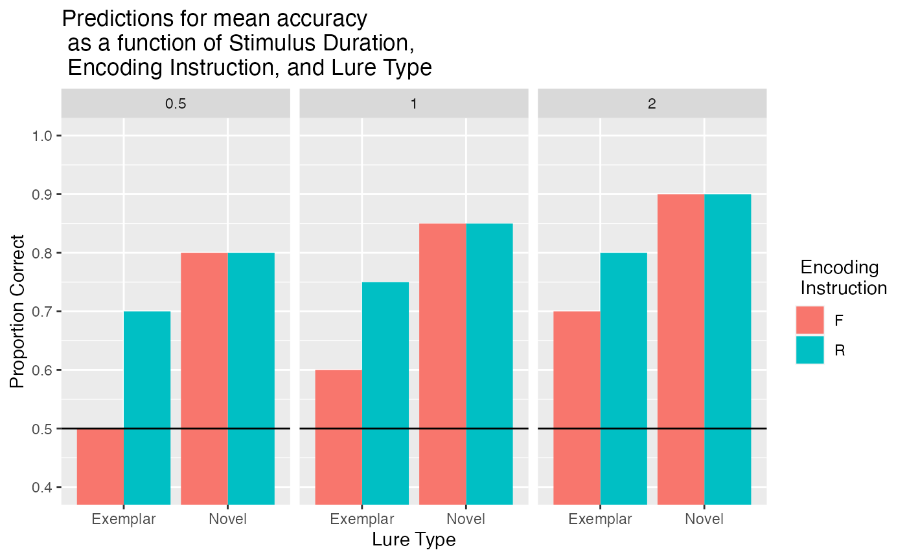

power_analysis
power_analysis.RmdConduct a simulation-based power analysis.
Set predictions
We replicated Experiment 1 of Ahmad, Tan, and Hockley (2019), with the addition of a stimulus duration manipulation. The original study presented all pictures for 2000ms during the encoding phase.
We presented pictures for 500ms, 1000ms, or 2000ms during the encoding phase. We assumed that reducing encoding would generally reduce the memorability of pictures. We programmed a main effect of stimulus duration into the prediction vector, and assumed that proportion correct would decrease by 5% for each shorter duration. We also assumed that directed forgetting would be easier for less memorable stimuli, so we increased the directed forgetting effect for exemplar lures by 5% for each shorter duration. We also programmed an advantage for novel over exemplar lures.
library(tidyverse)
# save results to this list
power_analysis <- list()
# predictions for mean accuracy in each condition (see paper for rationale)
power_analysis$predictions = c(.90-.1, #R 500 Novel
.80-.1, #R 500 Exemplar
.90-.05, #R 1000 Novel
.80-.05, #R 1000 Exemplar
.90, #R 2000 Novel
.80, #R 2000 Exemplar
.90-.1, #F 500 Novel
.70-.1-.1, #F 500 Exemplar
.90-.05, #F 1000 Novel
.70-.05-.05, #F 1000 Exemplar
.90, #F 2000 Novel
.70 #F 2000 Exemplar
)Graph Predictions
# graph
power_analysis$predicted_means <- data.frame(
encoding_cue = rep(c("R","F"), each = 6),
image_duration = rep(rep(c(.5,1,2), each = 2),2),
test_condition = rep(rep(c("Novel","Exemplar"),each = 1),6),
accuracy = power_analysis$predictions
)
power_analysis$prediction_graph <- ggplot(
power_analysis$predicted_means,
aes(x=test_condition,y = accuracy, fill=encoding_cue))+
geom_bar(stat="identity", position="dodge")+
geom_hline(yintercept=.5)+
coord_cartesian(ylim=c(.4,1))+
scale_y_continuous(breaks = seq(0.4,1,.1))+
facet_wrap(~image_duration)+
ylab("Proportion Correct")+
xlab("Lure Type")+
scale_fill_discrete(name = " Encoding \n Instruction") +
ggtitle("Predictions for mean accuracy \n as a function of Stimulus Duration, \n Encoding Instruction, and Lure Type")
power_analysis$prediction_graph
# function to generate simulated data for one subject
# we use the binomial to generate decisions for old/new on each trial
# the binomial probability of success is set to the mean accuracy for each condition
# we simulate all 120 trials for a single simulated subject.
create_n_subjects <- function(n){
all_data <- data.frame()
for(i in 1:n){
subject_data <- data.frame(
sub_num = i,
encoding_cue = rep(c("R","F"), each = 60),
image_duration = rep(rep(c(.5,1,2), each = 20),2),
test_condition = rep(rep(c("Novel","Exemplar"),each = 10),6),
accuracy = rbinom(120,1,rep(power_analysis$predictions,each=10))
)
all_data <- rbind(all_data,subject_data)
}
return(all_data)
}Run simulation
We run a simulation of the power of our design to detect effects of interest with n = 35.
power_analysis$all_sim_data <- data.frame()
num_subs <- 35
num_sims <- 100
for(i in 1:num_sims){
#print(i)
simulated_data <- create_n_subjects(n=num_subs)
# ensure factors are factor class
simulated_data <- simulated_data %>%
mutate_at(c("sub_num","encoding_cue","image_duration","test_condition"), factor)
ANOVA_means <- simulated_data %>%
group_by(sub_num,encoding_cue,image_duration,test_condition) %>%
summarize(mean_accuracy = mean(accuracy), .groups="drop")
sim_anova <- aov(mean_accuracy ~ encoding_cue*image_duration*test_condition + Error(sub_num/(encoding_cue*image_duration*test_condition)), data = ANOVA_means)
save_summary <- summary(sim_anova)
cue <- save_summary$`Error: sub_num:encoding_cue`[[1]]$`Pr(>F)`[1]
cue_duration <- save_summary$`Error: sub_num:encoding_cue:image_duration`[[1]]$`Pr(>F)`[1]
cue_test <- save_summary$`Error: sub_num:encoding_cue:test_condition`[[1]]$`Pr(>F)`[1]
cue_duration_test <- save_summary$`Error: sub_num:encoding_cue:image_duration:test_condition`[[1]]$`Pr(>F)`[1]
t_df <- data.frame(cue,
cue_duration,
cue_test,
cue_duration_test)
power_analysis$all_sim_data <- rbind(power_analysis$all_sim_data,t_df)
}
proportion_sig <- function(ps){
length(ps[ps<.05])/length(ps)
}
# proportion significant for relevant effects
power_analysis$sim_power <- apply(power_analysis$all_sim_data,2,proportion_sig)
power_analysis$sim_power
#> cue cue_duration cue_test cue_duration_test
#> 1.00 0.31 1.00 0.39save out
save.image("data/power.RData")